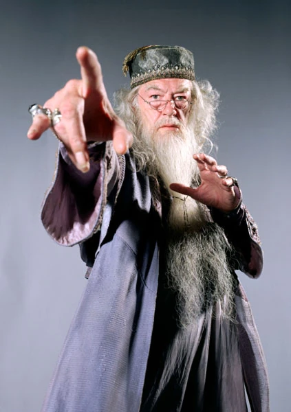

Curiosidades sobre Harry Potter
1. J.K. Rowling escribió el primer libro de la serie en un café de Edimburgo, Escocia.
2. La serie de Harry Potter ha sido traducida a más de 80 idiomas y ha vendido más de 500 millones de copias en todo el mundo.
3. La película de Harry Potter y la piedra filosofal fue filmada en varios lugares de Inglaterra, incluyendo el castillo de Alnwick y la estación de tren de King's Cross.
4. El personaje de Hermione Granger fue nombrado así por una obra de Shakespeare, "La tempestad".
5. J.K. Rowling ha revelado que el personaje.
Animales Fantasticos y dónde encontrarlos, es una película de fantasía basada en el libro del mismo nombre escrito por J.K. Rowling. La película sigue las aventuras de Newt Scamander, un magizoólogo que viaja por el mundo para estudiar y proteger a las criaturas mágicas. La película se desarrolla en la década de 1920 y explora el mundo mágico antes de los eventos de Harry Potter.peliculas relacionadas
Director de la escuela
Albus Persival Wulfric Brian Dumbledore

Albus Dumbledore
Albus Dumbledore es el director de la escuela de magia y hechicería de Hogwarts. Es un mago poderoso y sabio, conocido por su habilidad para resolver problemas complejos y su compromiso con la justicia. siempre busca la verdad y la justicia, incluso cuando es difícil.
Curiosidades sobre Albus Dumbledore
J.K. Rowling ha revelado que Dumbledore
Las cuatro casas de la escuela de magia y hechicería de Hogwarts son Gryffindor, Hufflepuff, Ravenclaw y Slytherin. Cada casa tiene sus propias características y valores, y los estudiantes son asignados a una casa al ingresar a la escuela.Cuales son las cuatro casas.
| Casa | Características |
|---|---|
| Gryffindor | Valor, coraje, determinación |
| Hufflepuff | Lealtad, trabajo duro, justicia |
| Ravenclaw | Inteligencia, sabiduría, creatividad |
| Slytherin | Astucia, ambición, determinación |